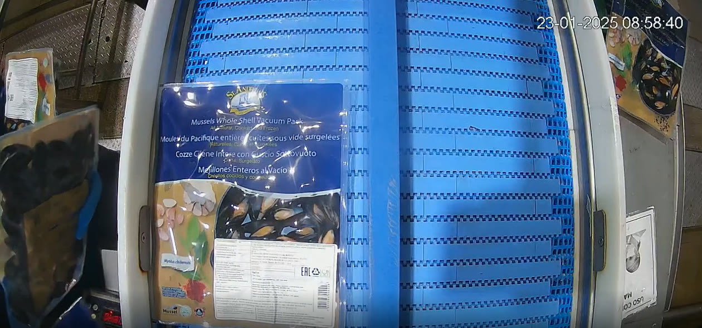

Conteo y clasificación automática en línea de empaque
St. Andrews es el mayor productor de mejillones del mundo. Cultiva más de 1.500 hectáreas en Chiloé y procesa sobre 70.000 toneladas al año en dos plantas.


Cómo se hizo
Un operario contando a ojo, 13.000 kg al día
St. Andrews necesitaba saber cuántos paquetes de cada formato salían de sus estaciones de empaque y cuánto tiempo se detenía la línea. El conteo lo hacía un operario a la vista, sobre una línea de 13.000 kg diarios.
Tres cámaras que cuentan, clasifican y detectan atascos
Sistema multicámara para 3 estaciones: cuenta los paquetes que cruzan la línea, los clasifica por formato y registra los estancamientos de la cinta. Opera con iluminación cambiante, cámaras que se mueven y superficies mojadas. El modelo se entrena en la nube pero corre en los equipos de la propia planta, no en un servidor remoto: si se cae internet, la línea sigue contando.
Una temporada completa sin que nadie anotara nada
Las 3 estaciones operaron en producción toda la temporada, sin intervención manual.